Tutorial: Crear una aplicación en Power Apps para enviar datos a Excel
En este tutorial, crearemos una aplicación en Power Apps que permitirá a los usuarios ingresar datos y enviarlos automáticamente a un archivo de Excel almacenado en la nube de Office 365.
1. Preparar el archivo de Excel
- Abre Excel y crea una hoja de cálculo.
- Define los encabezados de la tabla (ejemplo:
Fecha, Nombre, Dato1, Dato2, Texto1, Texto2).
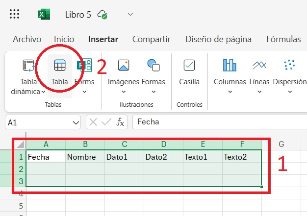
- Convierte el rango en una tabla
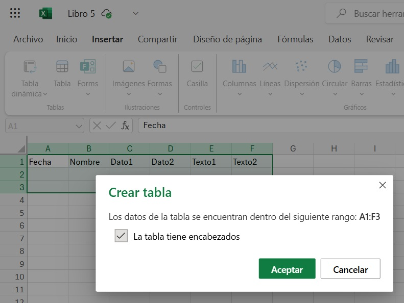
- Guarda el archivo en OneDrive.
2. Crear una nueva aplicación en Power Apps
- Ingresa a Power Apps.
- Crea un nuevo proyecto en blanco seleccionando "Aplicación vacía".
- Escoge la opción "Aplicación de lienzo en blanco".
- Se abrirá el entorno de edición de Power Apps.
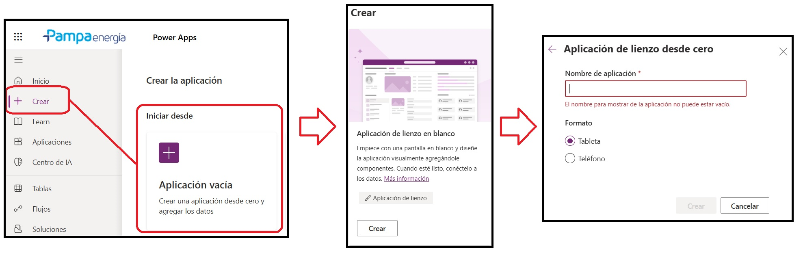
3. Configurar la apariencia de la aplicación
3.1. Definir la orientación de la pantalla
Ve a Configuración → Mostrar y ajusta la orientación.
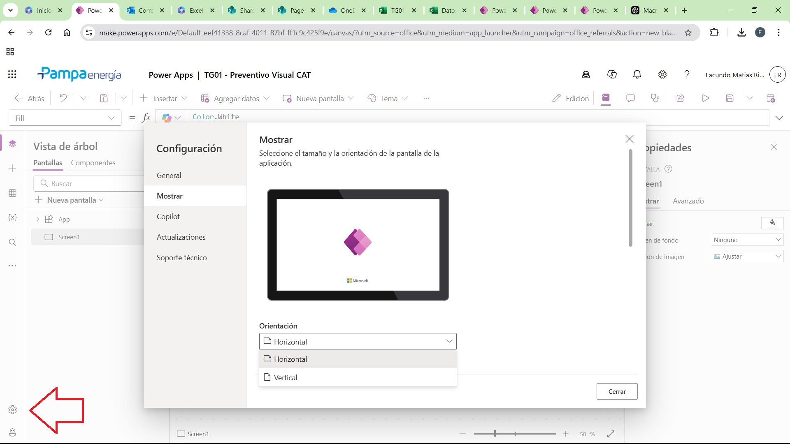
3.2. Cambiar el color de fondo
Selecciona la pantalla principal (Screen1) y en el panel de propiedades ajusta
el color de fondo.
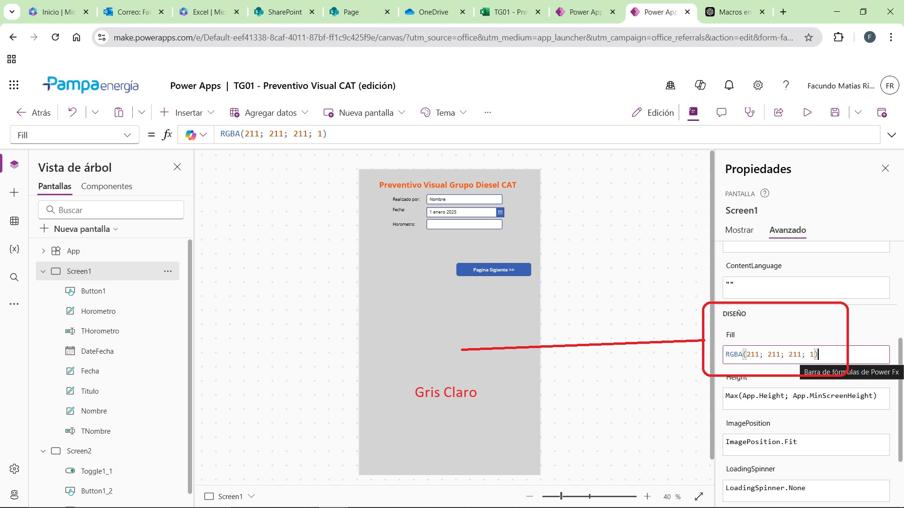
3.3. Agregar una imagen de fondo (opcional)
Inserta una imagen desde Insertar →
Multimedia → Imagen.
Ajusta la transparencia (ejemplo: 0.7).
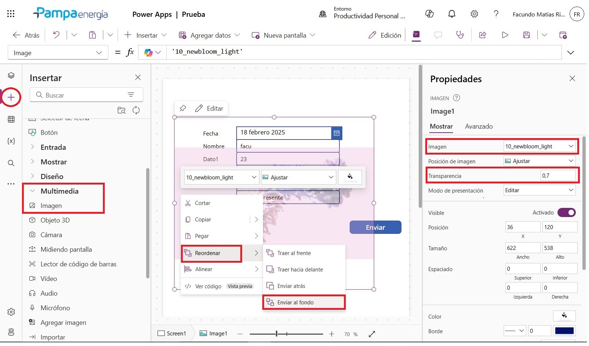
4. Agregar elementos de entrada de datos
- Etiquetas de texto → Para indicar qué debe ingresar el usuario.
- Entradas de texto → Para los campos de Nombre, Dato1, Dato2,
Texto1 y Texto2.
- Selector de fecha → Para el campo Fecha.
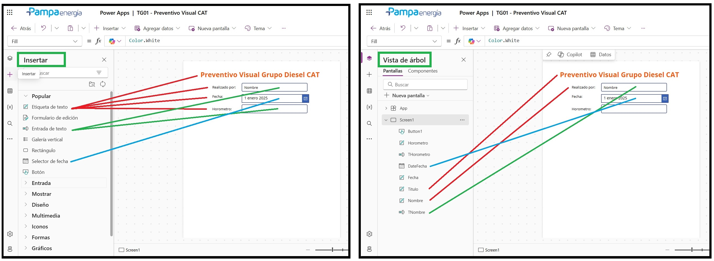
- Botón ("Enviar") → Para guardar los datos en Excel.
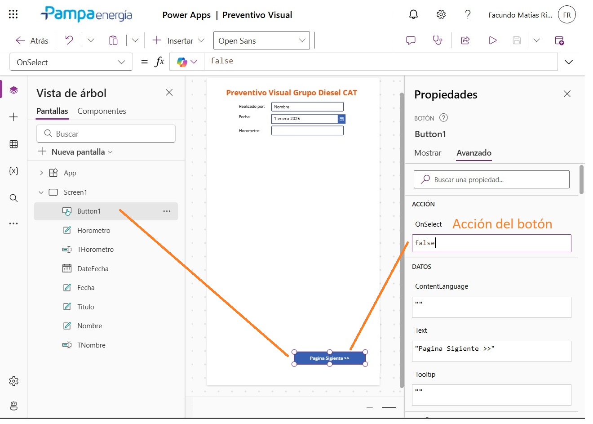
5. Conectar la aplicación con Excel
- En la parte superior, selecciona "Agregar datos".
- Escoge el conector "Excel Online (Empresas)".
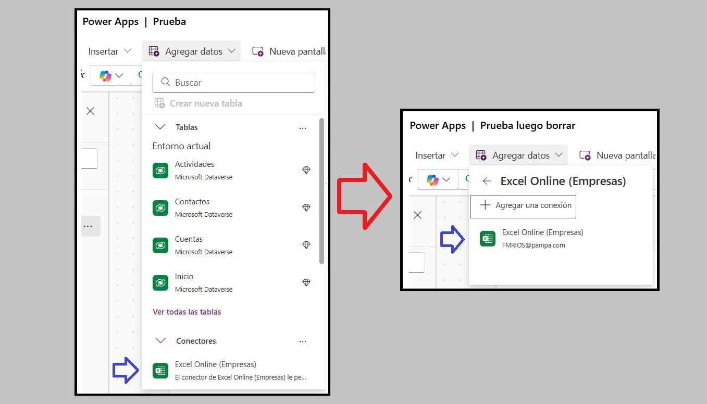
- Selecciona "OneDrive for Business"
- Busca y elige el archivo de Excel.
- Selecciona la tabla dentro del archivo.
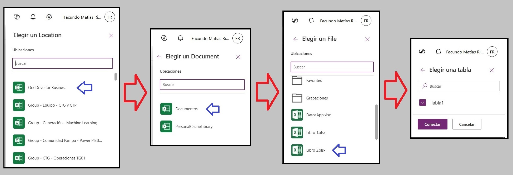
6. Configurar el botón para enviar datos a Excel
Selecciona el botón "Enviar" y en la propiedad OnSelect, escribe el siguiente código:
Patch(
Tabla1;
Defaults(Tabla1);
{
'Fecha': DateFecha.SelectedDate;
'Nombre': TNombre.Text;
'Dato1': TDato1.Text;
'Dato2': TDato2.Text;
'Texto1': TTexto1.Text;
'Texto2': TTexto2.Text
}
)
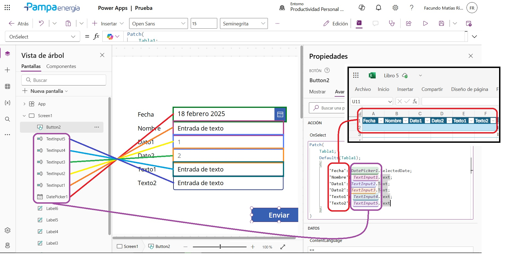
7. Guardar, probar y compartir la aplicación
- Guardar el proyecto en Power Apps.
- Vista previa: completa los campos y presiona "Enviar" para probar.
- Compartir la aplicación con los usuarios que ingresarán datos.
Importante: Asegúrate de dar permisos de edición en el archivo de Excel a los usuarios que utilizarán la app.
Con esto, habrás creado una aplicación funcional en Power Apps para ingresar datos y guardarlos en un archivo Excel en la nube. 🚀